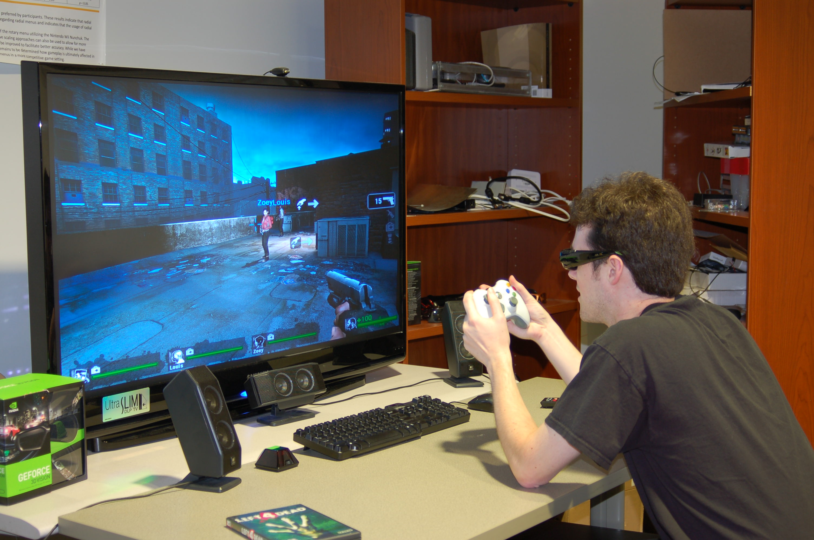

פרויקט סיום
לפני:אחרי:


במסגרת פרויקט הסיום בקורסים "תקשורת חזותית" ו"גרפיקה ממוחשבת", נתבקשנו להצתוות לצוות של שלושה סטודנטים ולבחור ביצירה קיימת ולהעניק לה פרשנות עכשווית, לפי איך שאנו רואים אותה ומפרשים אותה.
היצירה שבחרנו נקראת "גרניקה" שצוירה על ידי פבלו פיקאסו, ועוסקת במלחמת האזרחים שהתחוללה בספרד.
הפרויקט נעשה בצוות של שלושה סטודנטים, והוצג בתערוכה שכללה את כלל הפרויקטים בקורס בשיתוף סגל הפקולטה והסטודנטים.
מטה תמצאו קישור להורדת ההסבר המלא של היצירה הקיימת, וכן סרטון הסבר הכולל הסבר מילולי בשילוב היצירות.